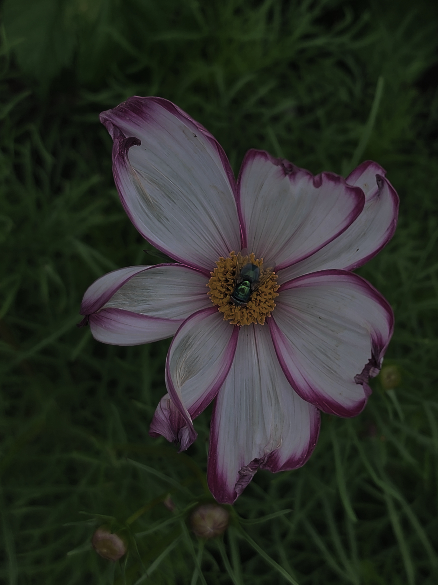
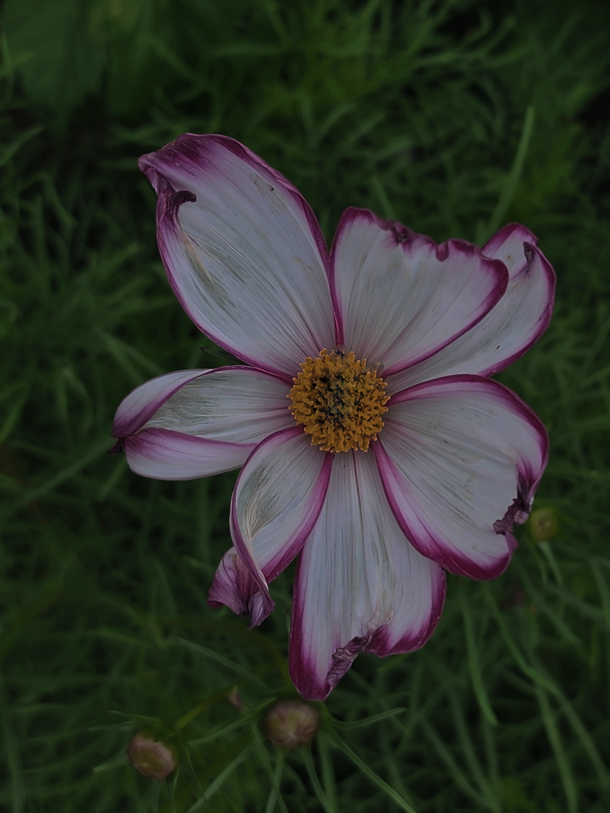
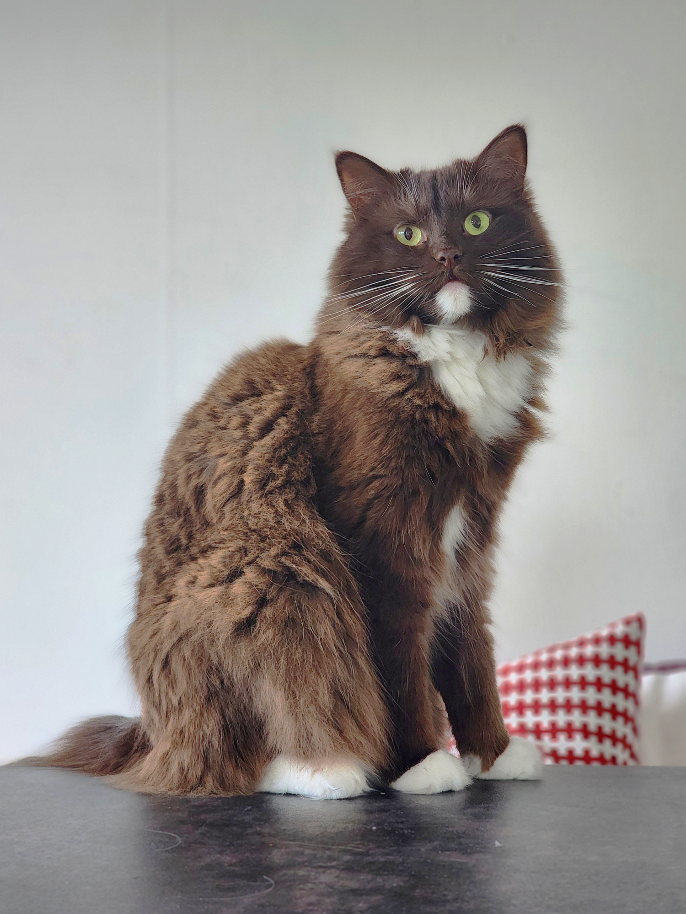
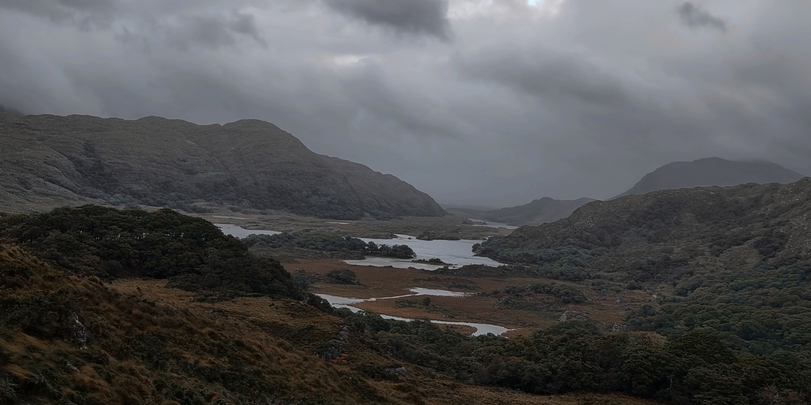

Blomman
Insekten i blommans mitt retuscherades bort för att göra blomman till bildens tydliga fokus. Därefter justerade jag ljusstyrka, kontrast och färgstyrka för att göra blomman och bakgrunden tydligare.
Här jämförs originalbilderna med de redigerade versionerna. Alla redigeringar har gjorts i Photopea.


Insekten i blommans mitt retuscherades bort för att göra blomman till bildens tydliga fokus. Därefter justerade jag ljusstyrka, kontrast och färgstyrka för att göra blomman och bakgrunden tydligare.


Det lila ögat färgkorrigerades till en naturlig färg. Jag justerade också ljusstyrka, kontrast och färgtoner så att kattens päls och ansikte syns tydligare.


Jag ökade ljusstyrkan och kontrasten för att framhäva detaljer i berg, vatten och moln. Färgtonerna förstärktes något, samtidigt som den mörka och dramatiska stämningen behölls.